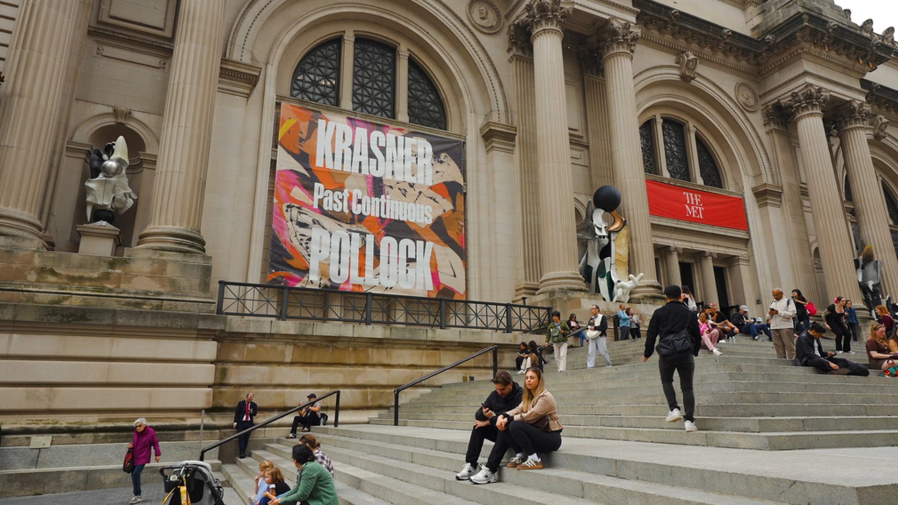

Welcome to New York City’s most iconic museum.
▰
General Admission: $30
Pay-what-you-wish for NY residents. Free for Members and children 12 and under.
⌖
On Manhattan’s Upper East Side
Take the 4/5/6 subway lines or M1, M2, M3, M4, M79 or M86 bus.
▦
Free guided tours in nine languages
Check our tour schedule for times.
◷
The museum is closed today
Closed on Wednesdays.Observation: October 7, 2026
Now On View
Collection Highlights
Become a Member
Enjoy unlimited free admission, special exhibition access, and Members-only events.
Join today▰Free admission
For you and at least one guest
◷Express entry
Via the Members Entrance at 81st Street
▦Member Preview Days
Preview exhibitions before opening
▢Discounts
Shopping, dining, and parking